Front-End Engineer
I am a Front-End Engineering graduate of The Iron Yard, in Downtown Indianapolis. I have a Marketing Degree from the Kelley School of Business and a background in Sales. Through hard work, determination, and drive, I aspire to be the best I can be. I am ecstatic to have become a Developer recently and excited for what the future holds. Let's Build the Future!
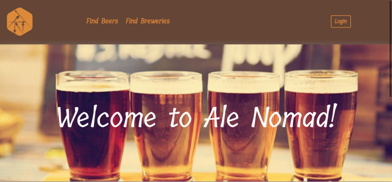
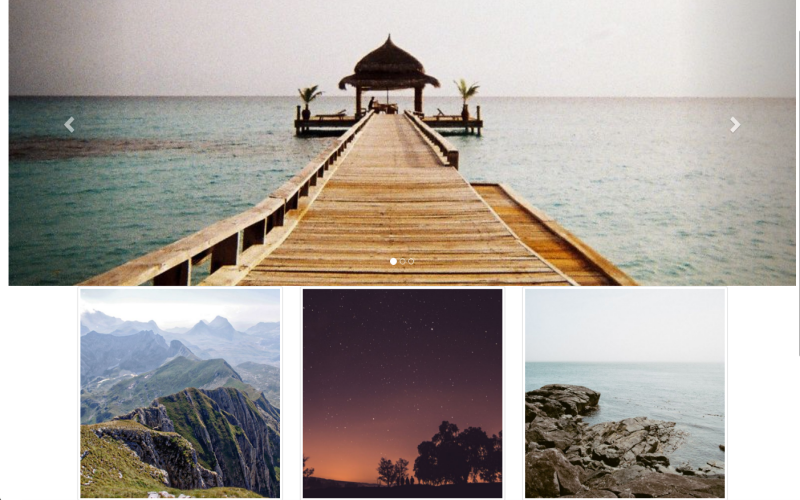
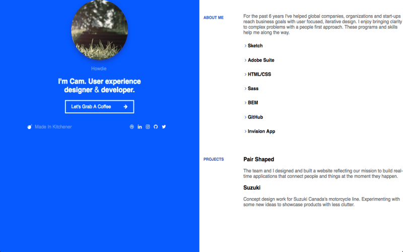
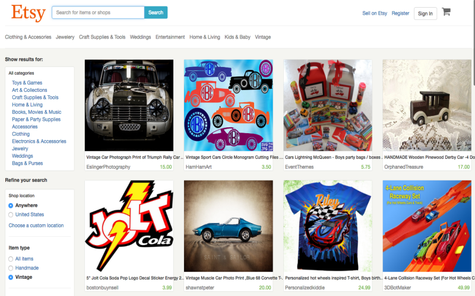
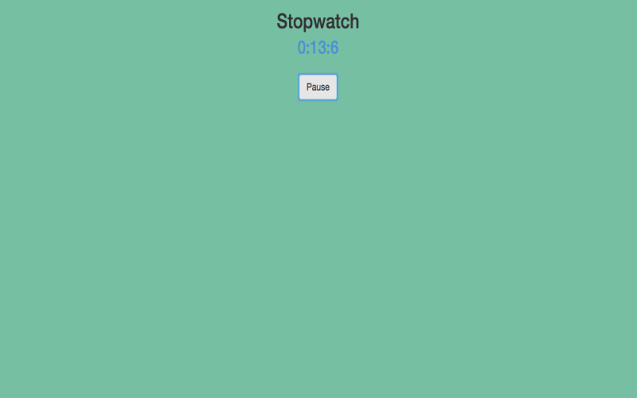
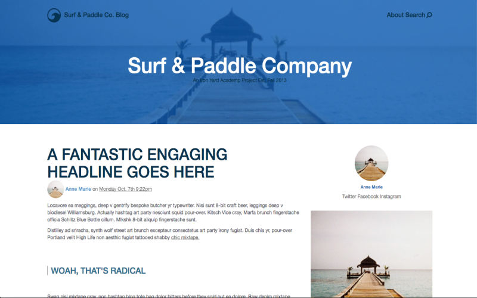
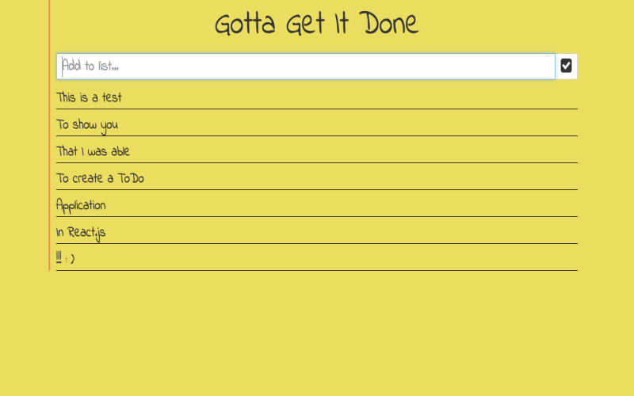
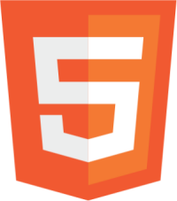

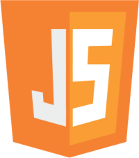
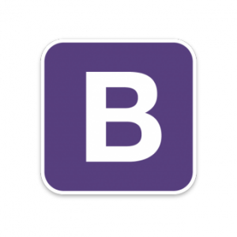
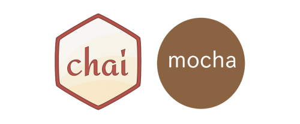
Resume
Skills
- HTML, CSS, JavaScript, React.js, Bootstrap, Responsive Design, Angular, Mocha & Chai Testing
- SQLite, Node, Adonis, Ruby on Rails
- GitHub
Education
Indiana University-Kelley School of Business, Indianapolis, IN
Bachelors of Science in Business
- Graduated: May, 2014
- Major: Marketing
Experience
The Iron Yard, Indianapolis, IN
Front-End Engineering
- Graduated from an immersive 12-week Front-End Engineering coding boot-camp.
- Completed 26 individual projects and 3 group projects over 12-weeks.
- Teamed with a Front-End and Back-End Developer to create a social media chat application.
- Teamed with 2 Front-End and 2 Back-End Developers to create an eCommerce application for a client during Agency Week.
- Paired with a Front-End and Back-End Developer during final projects to create an application that gives users the ability to search for craft beer and breweries where you could find that selected beer.
Angie's List, Indianapolis, IN
eCommerce Sales Consultant
- Created and designed new eCommerce campaigns to prospective and current business owners.
- Interacted with service providers to assist proper set up and maintenance of their eCommerce.
- Consulted service providers on top marketing practices to ensure they receive a good ROI.
Towne Park, Indianapolis, IN
Guest Service Coordinator
- Interacted with managers or supervisors to stay informed of changes affecting operations.
- Oversaw and coordinated ten valets in proper operational procedures and functions.
- Interpreted and resolved guest complaints regarding worker performance or services rendered.
Activities & Awards
Angie's List, Indianapolis, IN
- Awarded Q1 and Q3 Stephan’s Club for being a top-performer and percent over goal among entire eCommerce department.